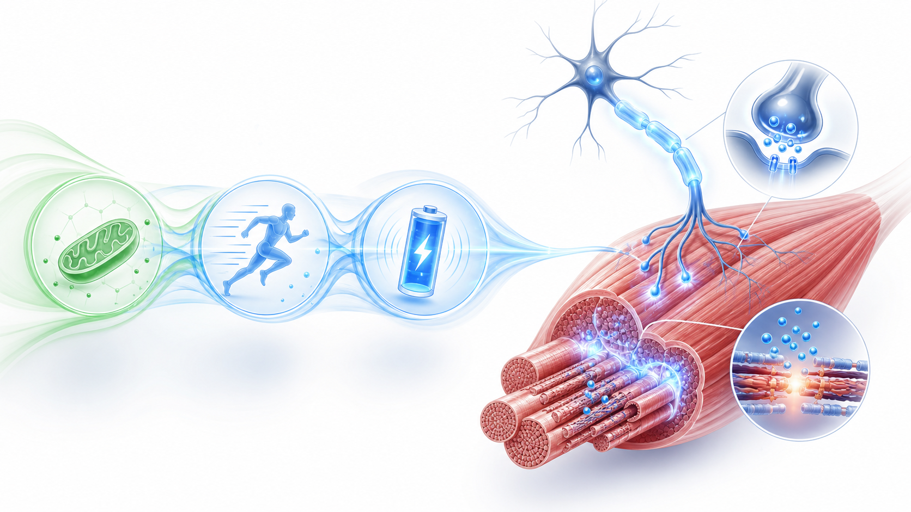
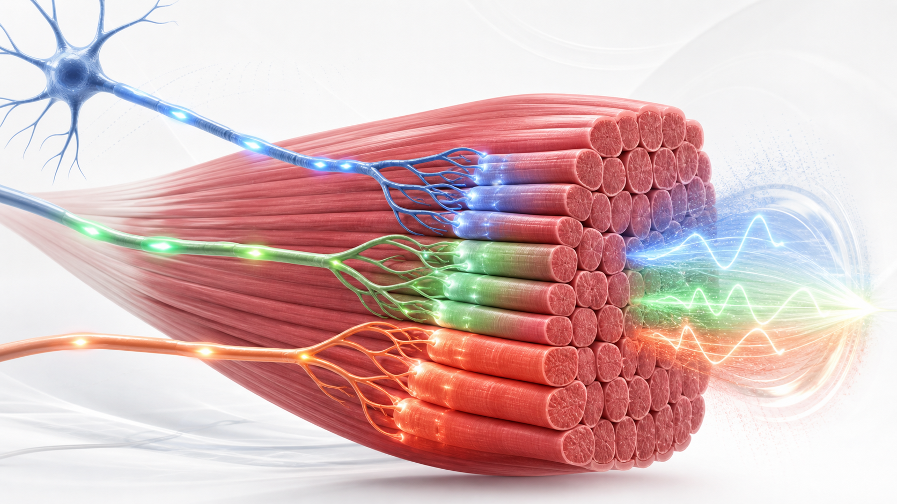
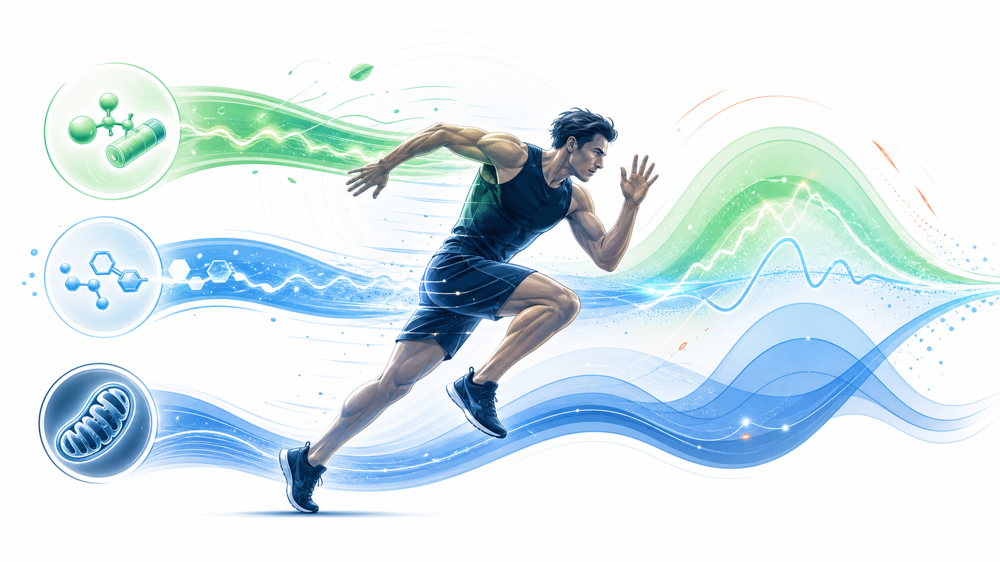

Day 28 · 第4周复盘-能量系统与神经肌肉

本周要串成一条训练判断链: 三能量系统负责补 ATP，兴奋-收缩耦联把神经电信号转换成钙信号，运动单位募集决定多少执行器参与和输出质量。
判断训练时先看时间与强度，再看组间恢复，最后看动作速度、稳定性和疲劳代偿。短爆发偏 ATP-PCr，中等高强度偏糖酵解，长时重复表现离不开氧化恢复。
打开 Day28 原学习页 →
本周要串成一条训练判断链: 三能量系统负责补 ATP，兴奋-收缩耦联把神经电信号转换成钙信号，运动单位募集决定多少执行器参与和输出质量。
判断训练时先看时间与强度，再看组间恢复，最后看动作速度、稳定性和疲劳代偿。短爆发偏 ATP-PCr，中等高强度偏糖酵解，长时重复表现离不开氧化恢复。
打开 Day28 原学习页 →



今日新知识 Day28：用一句话串起 ATP、钙离子和运动单位。
今日新知识 Day28：三能量系统答题时先判断哪两个变量？
今日新知识 Day28：为什么组间休息会影响下一组爆发质量？
Day27：募集、频率编码、同步化分别是什么意思？
Day25：“三系统轮流开机”哪里错？
Day21：深蹲动作负荷为什么不能只看杠铃重量？
Day14：肌梭和 GTO 各自监测什么？训练判断里怎么用？
场景题：客户做 30 秒冲刺 + 30 秒休息，前 3 轮速度稳定，第 5 轮开始速度下降、动作变散、落地声音变重。你如何用 Day28 复盘链判断，并调整下一轮？
| 易错点 | 错因 | 修正句 |
|---|---|---|
| 把三能量系统当成秒表开关 | 只记时长，没有记住贡献比例。 | 三系统并行工作，强度、时长和恢复改变比例。 |
| 把钙离子当成能量来源 | 混淆信号和燃料。 | 钙打开结合位点，ATP 供横桥循环用能。 |
| 大小原则方向记反 | 误以为爆发时大单位一定先上。 | 通常小到大招募，高负荷/高速度需求更快招到高阈值单位。 |
| 爆发训练越累越有效 | 把代谢疲劳当成神经质量。 | 爆发训练要保速度、同步化和动作稳定，休息常要更充分。 |
| 只用能量系统解释技术崩坏 | 忽略神经肌肉控制和力学负荷。 | 表现下降要同时看供能、神经输出和关节受力。 |